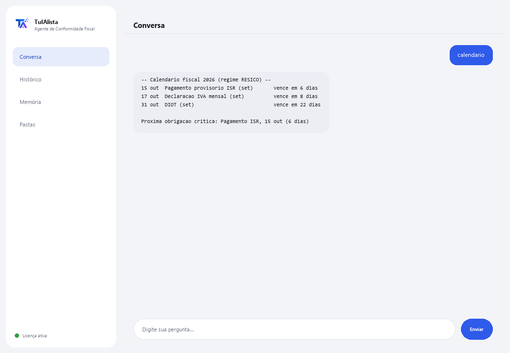

Agente de Conformidade Fiscal
Organiza seus documentos fiscais, monta seu calendário de obrigações e avisa antes de cada prazo do SAT (fisco mexicano).
O que resolve e o que você precisa?
Perder um prazo do SAT custa multas e encargos. Este agente transforma a pasta onde você guarda seus documentos fiscais (notas, declarações, comprovantes, XML de CFDI) em um painel de conformidade: diz o que vence em breve, o que pode estar faltando e quais gastos podem ser dedutíveis — tudo calculado no seu próprio computador.
- Você precisa: sua chave de licença (TIA-XXXX-XXXX-XXXX-XXXX) e a pasta com seus documentos. Nada de Python nem conhecimento técnico.
- Primeiro resultado em menos de 5 minutos: instala, ativa, escolhe sua pasta e roda calendario para ver suas obrigações do ano.
- Seus documentos fiscais nunca saem do seu computador — a análise roda localmente.
soporte@tuialista.com ou acesse tuialista.com/soporte — normalmente respondemos no mesmo dia útil.1 O que este agente faz
Você aponta para a pasta com seus documentos fiscais e ele:
- Indexa (PDF, Word, Excel, CSV, TXT, XML de CFDI, inclusive em subpastas) e extrai os dados-chave: RFC, regime, períodos, tipo de documento, IVA, ISR, retenções, total e datas.
- Monta um calendário de obrigações do exercício com os prazos típicos conforme seu regime detectado.
- Avisa sobre as obrigações prestes a vencer (e as recém-vencidas).
- Detecta possíveis deduções mencionadas nos seus documentos.
- Detecta documentos ou meses que podem estar faltando no seu arquivo.
- Gera um resumo fiscal executivo do período, com recomendações.
- Responde perguntas livres sobre sua situação fiscal, no seu próprio idioma.
O resultado: você chega a cada prazo do SAT organizado e sem surpresas — sem precisar abrir cada arquivo um por um para saber onde está.
2 Instalação (2 minutos)
Para Windows. Não precisa de internet o tempo todo nem enviar nada para a nuvem.
Baixe o instalador em tuialista.com/descargar (agente Fiscal) e abra-o. Ele cria um atalho na sua área de trabalho com o logo — não precisa de Python nem terminal.
Dê duplo clique no novo ícone. Cole sua chave de licença (você a recebeu por e-mail na compra) e clique em Ativar. Você verá um check verde quando for válida.
Selecione a pasta com seus documentos fiscais e clique em Começar a usar o agente. Na próxima vez que abrir, ele inicia direto — lembra sua chave e sua pasta.
3 Como usar
O agente abre uma janela de chat, como um app de mensagens — não é uma tela preta de programador. Você escreve seu comando ou pergunta na caixa de texto abaixo, clica em Enviar (ou Enter), e a resposta aparece como uma mensagem, igual nesta imagem real:

Os comandos a seguir são as palavras que você pode escrever nessa mesma caixa de texto:
> calendarioSuas obrigações do ano: pagamentos provisórios de ISR, IVA mensal, DIOT e declaração anual, com prazos típicos conforme seu regime.
> obligaciones [dias]O que vence em breve — por padrão os próximos 30 dias, incluindo as recém-vencidas, ordenadas por urgência. Ex.: obligaciones 15.
> deduccionesDetecta menções de gastos potencialmente dedutíveis (aluguel, honorários, combustível, software, previdência...) e em quais arquivos aparecem.
> faltantesMeses do exercício sem comprovantes e tipos de documento esperados que não foram encontrados.
> resumenResumo fiscal executivo: situação geral, documentação disponível, obrigações críticas, possíveis deduções e recomendações.
> analizar <arquivo>RFC, tipo, regime, períodos, IVA, ISR, retenções, total e datas extraídos de um documento específico. Ex.: analizar declaracion_mayo.pdf.
> pergunta livre?Você pode escrever qualquer dúvida em linguagem natural, ex.: quais obrigações eu tenho se sou RESICO?
> sairEncerra a sessão (exit também funciona).
Quer ver as 20 receitas completas com um exemplo real de cada uma? Consulte o Catálogo de receitas — um documento separado por ser extenso: catalogo_recetas.pdf junto com este manual, ou a versão interativa em tuialista.com/guia/fiscal/recetas.
4 Exemplos de uso comum
Preparar o mês
obligaciones 30 → faltantes
Revisar deduções antes da declaração anual
deducciones → resumen
Ver o calendário completo do ano
calendario
Uma dúvida pontual
quando vence minha declaração anual como pessoa física?
5 Perguntas frequentes
Meus documentos fiscais são enviados para a internet?
Quais formatos ele aceita?
As datas do calendário são oficiais?
Isso substitui meu contador?
Como ele sabe meu regime?
As deduções que ele detecta são realmente dedutíveis?
Os valores de IVA/ISR extraídos são exatos?
Ele lê um PDF escaneado?
Em que idioma ele responde?
Ele modifica meus documentos?
6 Solução de problemas
Não lê um .pdf, .docx ou .xlsx
Mostra “0 documentos indexados”
Não detecta meu RFC ou regime
Diz “Licença inválida” ou pede para reconectar
“Nenhum provedor de IA configurado”
Nenhuma dessas soluções resolveu seu problema? Escreva para nós diretamente — teremos prazer em revisar com você.
soporte@tuialista.com ou acesse tuialista.com/soporte — normalmente respondemos no mesmo dia útil.7 Privacidade e confidencialidade
Seus documentos fiscais nunca saem do seu computador.
- O agente lê, indexa e extrai dados localmente, no seu próprio computador. Não envia seus documentos para nenhum servidor nem para o SAT.
- O calendário, as obrigações, as deduções, os faltantes e a análise de documentos são calculados no seu computador.
- A única coisa que trafega pela internet é: (1) uma verificação de que sua licença está ativa — que não inclui seus documentos —, e (2) ao usar resumen ou fazer uma pergunta livre, um fragmento da informação relevante é enviado ao motor de IA para redigir essa resposta.